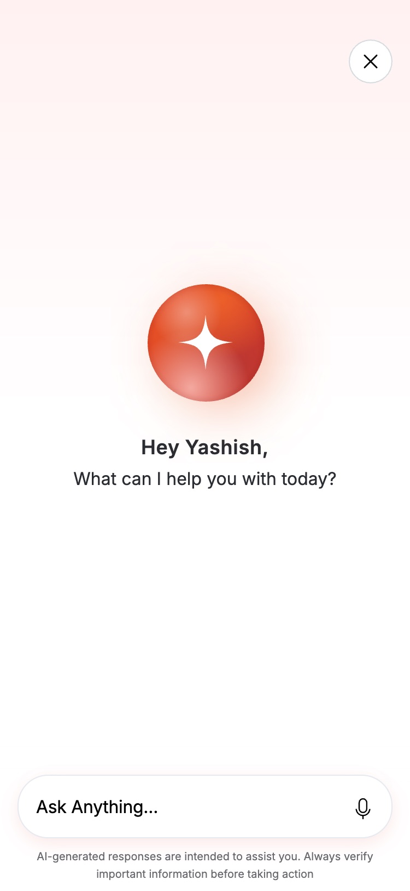
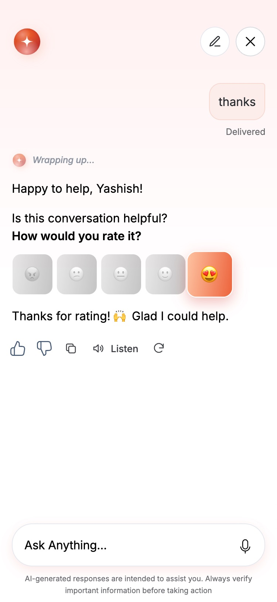
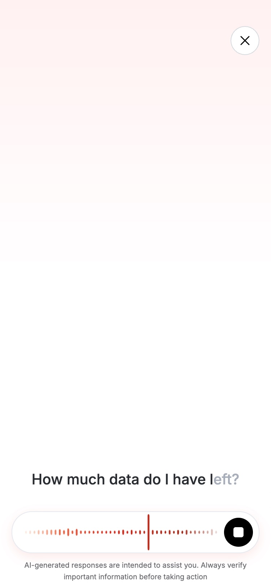

Designed an AI layer for the Airtel app that finishes tasks instead of answering questions, cutting a data top-up from 7 steps to 3.
Role
Lead Product Designer, end to end
Team
Product + Engineering + Data
Platform
Mobile app, text and voice
Company
Airtel · 300 Mn users

What are we solving?
People open the Airtel app to do one thing: check data, recharge, pay a bill, fix the internet. They don’t browse, they act. But the app made them search menus to do it, and many gave up and called customer care. Replacing menus with an AI meant solving 3 problems:
Navigation: A person with a clear goal still had to find the right entry point and walk several screens for a simple task.
Hand-offs: When the path wasn’t clear, people moved to a call centre or store, and every hand-off to a human raised operating costs.
Trust: An assistant that reads your account and can spend your money has to earn trust before the first answer, and keep it after a wrong one.
Today 7
Open the app
Find “Prepaid”
Look for usage
Go back, open “Packs”
Compare data packs
Open details
Pay
With Agentic 3
“Kitna data bacha hai?”
See usage and one best-match pack
Confirm and pay in the chat
Steps to add a data top-up, walked through in the current app and in the prototype.
How did we solve it?
Instead of improving the menus, I proposed Agentic: a conversation that understands what people want and does it, inside the chat.
Intent instead of navigation. A pill in the header cycles real asks. People type or speak in English or Hinglish, and answers come back as cards with the next action inside.
Finish the task in the chat. Recharges, bill payments and network fixes complete in the conversation. When a fix fails, the complaint arrives pre-filled, so a hand-off never starts from zero.
Trust by design. A one-time first run sets the rules, the thinking state names real steps, money never moves without a confirm, and out-of-scope asks get an honest “I’m still learning that”.
How might we design a trustworthy conversation that helps Airtel users finish tasks instantly by saying what they want, instead of navigating flows?
Key Considerations
The entry sits where intent forms
A pill in the top bar that cycles real requests, instead of a floating button or a new tab. People decide what they came for at the top of the screen, and a rotating prompt teaches what it can do without a tutorial.
Trade-off: it takes the search slot. Search stays reachable inside the conversation.
Agree on the rules before the first answer
A one-screen first run: what it is good at, that it is still learning, and what never to share. Setting expectations early lowers the cost of a wrong answer later, and covers consent for account access.
Trade-off: one extra tap, shown only once.
Show the work while it thinks
The orb spins while the status line names real steps: “Checking current usage…”. A spinner says “wait”; a named step says “I’m doing what you asked”, which makes the wait feel shorter.
Trade-off: steps must match the backend. Engineering agreed to send real stage events.
Answers are cards, not paragraphs
Anything with numbers renders as a card from the app’s design system, with its action inside. A usage bar reads faster than a sentence, and a button inside the answer turns reading into doing.
Trade-off: less freedom than free text, so every card keeps a short sentence that reads well aloud.
Recommend one, and say why
One “Best match” pack with a reason, and two alternatives below. A wall of packs is the old app again; one explained pick reads as advice, not a sales pitch.
Trade-off: the pick follows usage, not margin. The premium pack appears as an alternative.
Money never moves without a confirm
Every purchase opens a sheet with amount, item, number and payment method, and Pay is a separate tap. An agent that can spend is only trusted if it always asks.
Trade-off: one more tap than one-click buying.
Diagnose first, escalate with context
“My internet is slow” runs a visible check, explains the cause and lists fixes. Many issues are fixable in a minute; when they aren’t, the ticket arrives pre-filled.
Trade-off: the check takes about three seconds.
Voice lives in the composer
The mic turns the composer into a waveform with a live transcript. A full-screen voice mode is a context switch; the transcript lets people catch mis-hears, Hinglish included.
Trade-off: less room for visuals. Full voice mode is one tap away.
The AI is red-brown, actions are the app
The accent marks only the AI. Buttons and cards inside answers keep the app’s black CTAs and blue links, so the AI feels new but paying a bill feels exactly as safe as before.
Trade-off: two palettes need rules. I documented where the accent is allowed.
When it can’t help, say what it can do
Out-of-scope asks get an honest “I’m still learning that” and a list of what it can do now. A confident wrong answer loses trust fastest.
Trade-off: it admits limits openly, by design.
The Process
1
Research
I studied ChatGPT, Gemini, Copilot, Perplexity, Arc and Grok on the same tasks. Six patterns kept repeating, and each one shaped a part of Agentic.
Guided startersFollow-up suggestionsQuiet UI, one accentInline action controlsStructured widgetsTrust signals
2
Principles
You stay in control: no irreversible step without consent. Assist when it matters: stay out of the way until it can help. Be transparent: picks are explained and the work is visible. Fail gracefully: when unsure, ask, suggest or escalate, never bluff.
3
Conversation model
One Experience Agent owns the conversation; specialised agents do the work behind guardrails. Agreeing on this model decided half the UI.
InUser→Guardrails→Experience Agent
BuyBuy Agent→Customer data→Feasibility→Lead agent
ServeServe Agent→Diagnostics→Resolved?→Answer or ticket
OutStructured output→Guardrails→User
4
Design exploration
The final screens came after a lot of wrong turns. Finding the AI’s colour alone took four rounds, and the loader took six, ending on one rule: the loader must never look like the assistant itself.
Round 1Coral on white. Looked like a different brand.
Round 2Amber. Too orange to say “Airtel”.
Round 3Black with floating shapes. Decoration.
KeptOne dot texture, lit by the orb.
5
Prototype in code
I built a working prototype with streaming replies, rich telco cards, payments, feedback and a voice mode with a mic-reactive orb. It settled debates about pace and trust that static frames couldn’t, and gave Engineering a concrete reference for real “thinking” stage events.
Final Designs
the experience you can try
First runOrb docks on first keystrokePlans with one pickPayment successComplaint with context

Closing with a rating

TranscribingFull voice mode
Try the prototype
Pick a scenario, or tap the red pill and type your own question in English or Hinglish.
Outcome
7 → 3steps to add a data top-up
4core tasks finished inside the chat
2languages, English and Hinglish, by text or voice
A data top-up dropped from 7 steps to 3, counted by walking the same task in the current app and in the prototype.
Data, recharge, bills and network issues all complete in one conversation, by text or voice, in English or Hinglish.
Design set the vision and turned a broad AI ambition into a conversation model and a working prototype the team could build from.
Success is measured by task completion in the chat, digital-to-assisted hand-offs per 1,000 sessions, fallback recovery, and post-chat rating.
What I learned
Prototype the feeling early. A working prototype settled debates about pace and trust that static frames couldn’t.
Design the system, not the screen. Agreeing on the conversation model decided half the UI.
Trust is a budget. Surprises spend it; confirms, honest limits and visible work refill it.